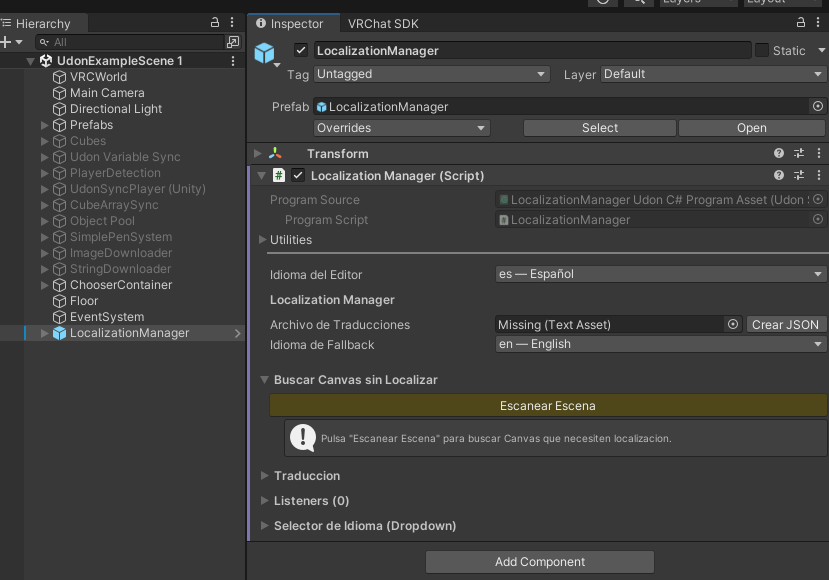

Flujo Automatico
Localiza todos tus Canvas con unos pocos clics usando la Configuracion Rapida
Cuando usar el flujo automatico
- Cuando casi todos tus Canvas estan escritos en el mismo idioma
- Cuando quieres que el sistema haga la mayor parte del trabajo
- Cuando no necesitas controlar cada texto individualmente
- Es el flujo recomendado para la mayoria de mundos
Paso 1: Colocar el prefab
Arrastra el prefab LocalizationManager.prefab a la escena de tu mundo. Lo encuentras en: Packages/Idiomas/Prefabs/LocalizationManager.prefab
El prefab incluye un Canvas con un dropdown de seleccion de idioma ya configurado. Si no necesitas el dropdown, puedes eliminar el Canvas hijo y dejar solo el componente LocalizationManager.
Paso 2: Configurar el inspector

1 2 3 4 5Paso 3: Escanear la escena
Al pulsar "Escanear Escena", el sistema busca todos los Canvas en la escena y los muestra en una lista:
 1
2
3
4
5
1
2
3
4
5
Paso 4: Configuracion Rapida
Este es el paso clave. Al pulsar "Configuracion Rapida: Localizar Todo", el sistema ejecuta automaticamente:
- Añade un componente CanvasLocalizer a cada Canvas detectado en la escena
- Genera un ID unico para cada Canvas basado en su nombre en la jerarquia
- Escanea todos los textos hijos de cada Canvas (TextMeshProUGUI y Legacy Text)
- Evalua cuales necesitan traduccion — excluye automaticamente numeros puros (
"123","45.6"), signos ("-","/",":"), y textos vacios - Genera claves de traduccion basadas en la jerarquia (ej:
"settings_panel_volume_label") - Crea o actualiza el archivo JSON con todas las claves y el texto del idioma base seleccionado
- Registra todos los CanvasLocalizer con el LocalizationManager
Idiomas_Data/ dentro de Assets/. Si ya existia, las claves nuevas se agregan sin borrar las existentes.
Paso 5: Revisar resultados
Despues de la Configuracion Rapida, puedes seleccionar cualquier Canvas para ver su CanvasLocalizer y revisar los textos detectados:
 1
2
3
4
5
1
2
3
4
5
Paso 6: Traducir
Con las claves en el JSON, es momento de traducir. Ve a la seccion "Traduccion" del LocalizationManager o usa el menu Tools > Idiomas > Auto-Traducir.
El proceso resumido:
- Pulsa "Auto-Traducir Idiomas Faltantes"
- Selecciona los idiomas que quieres traducir
- Pulsa "Traducir X textos con MyMemory"
- Revisa las traducciones en la vista previa
- Pulsa "Guardar al JSON"
Sigue la guia completa de Auto-Traduccion para el paso a paso detallado.
Paso 7: Probar
Entra en Play Mode en Unity. El sistema detecta tu idioma automaticamente. Usa el dropdown del prefab para probar diferentes idiomas y verificar que todo se traduce correctamente.
□) en el editor de Unity. Esto es normal — en VRChat se renderizan correctamente gracias a las fuentes Noto Sans incluidas en el cliente.
Resultado
Despues de estos 7 pasos, tu mundo tiene:
- Todos los Canvas localizados automaticamente
- Un archivo JSON con traducciones en los idiomas que elegiste
- Deteccion automatica del idioma del jugador
- Un dropdown para que el jugador cambie idioma manualmente
- Todo funcional tanto en el editor como en VRChat